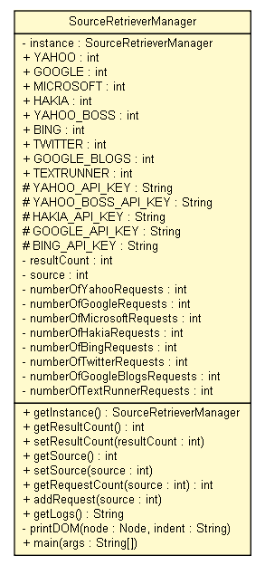

tud.iir.web
Class SourceRetrieverManager

java.lang.Object
 tud.iir.web.SourceRetrieverManager
tud.iir.web.SourceRetrieverManager
public class SourceRetrieverManager
- extends java.lang.Object
The SourceRetrieverManager holds information about query settings and statistics for indices of Yahoo!, Google, Microsoft, Hakia, Bing, Twitter and Google Blogs.
| Methods inherited from class java.lang.Object |
clone, equals, finalize, getClass, hashCode, notify, notifyAll, toString, wait, wait, wait |
instance
private static SourceRetrieverManager instance
YAHOO
public static final int YAHOO
- See Also:
- Constant Field Values
GOOGLE
public static final int GOOGLE
- See Also:
- Constant Field Values
MICROSOFT
public static final int MICROSOFT
- See Also:
- Constant Field Values
HAKIA
public static final int HAKIA
- See Also:
- Constant Field Values
YAHOO_BOSS
public static final int YAHOO_BOSS
- See Also:
- Constant Field Values
BING
public static final int BING
- See Also:
- Constant Field Values
TWITTER
public static final int TWITTER
- See Also:
- Constant Field Values
GOOGLE_BLOGS
public static final int GOOGLE_BLOGS
- See Also:
- Constant Field Values
TEXTRUNNER
public static final int TEXTRUNNER
- See Also:
- Constant Field Values
YAHOO_API_KEY
protected static java.lang.String YAHOO_API_KEY
YAHOO_BOSS_API_KEY
protected static java.lang.String YAHOO_BOSS_API_KEY
HAKIA_API_KEY
protected static java.lang.String HAKIA_API_KEY
GOOGLE_API_KEY
protected static java.lang.String GOOGLE_API_KEY
BING_API_KEY
protected static java.lang.String BING_API_KEY
resultCount
private int resultCount
source
private int source
numberOfYahooRequests
private int numberOfYahooRequests
numberOfGoogleRequests
private int numberOfGoogleRequests
numberOfMicrosoftRequests
private int numberOfMicrosoftRequests
numberOfHakiaRequests
private int numberOfHakiaRequests
numberOfBingRequests
private int numberOfBingRequests
numberOfTwitterRequests
private int numberOfTwitterRequests
numberOfGoogleBlogsRequests
private int numberOfGoogleBlogsRequests
numberOfTextRunnerRequests
private int numberOfTextRunnerRequests
SourceRetrieverManager
private SourceRetrieverManager()
getInstance
public static SourceRetrieverManager getInstance()
getResultCount
public int getResultCount()
setResultCount
public void setResultCount(int resultCount)
getSource
public int getSource()
setSource
public void setSource(int source)
getRequestCount
public int getRequestCount(int source)
addRequest
public void addRequest(int source)
getLogs
public java.lang.String getLogs()
- get a log string of how many request have been sent
- Returns:
printDOM
private void printDOM(org.w3c.dom.Node node,
java.lang.String indent)
main
public static void main(java.lang.String[] args)
- Parameters:
args -